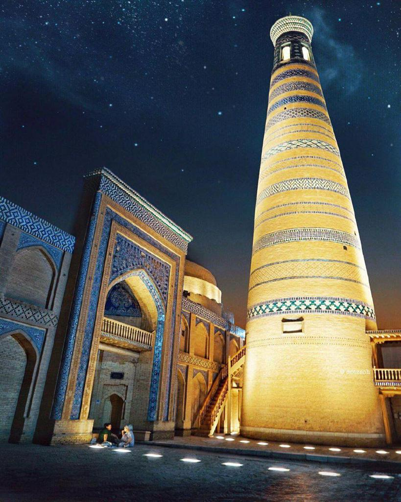
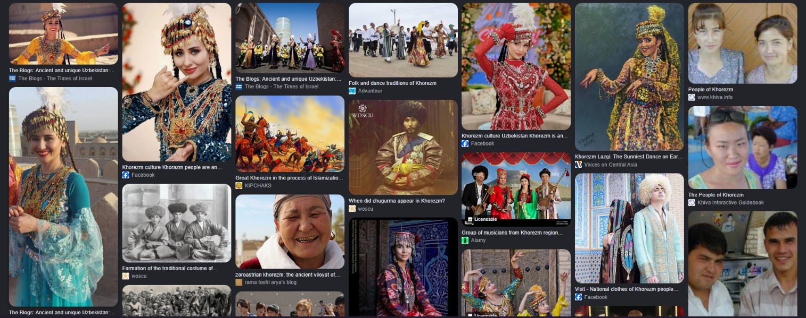

Most visits places hazrasp and khorezm

The ancient Hazarasp fortress in Khorezm
the Ancient Hazarasp Settlement (a massive archaeological park featuring centuries-old fortresses) and the locally popular Hazarasp Eco Park (Istirohat bog'i)

Ancient Khorezm Silk-Road culture.
Hazarasp’s culture reflects a vibrant Silk Road heritage rooted in ancient Khorezmian traditions, unique local dialects, and enduring craftsmanship.

Ancient Khorezm fortress culture.
The ancient Hazarasp fortress represents a unique defensive culture of the Khorezm civilization, featuring centuries-old military architecture and towering adobe walls.

Saidjon Guide
I have been living in khazarasp for 20 years and very famouse in khorezim here other people will come to bozor because in khazarsp products and clothes are very cheap than other city in khorezm